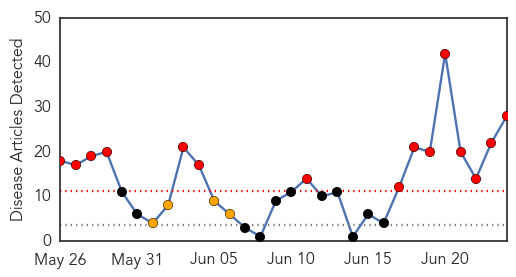
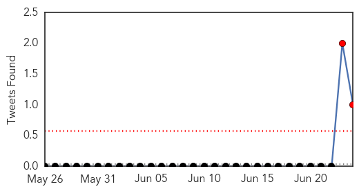
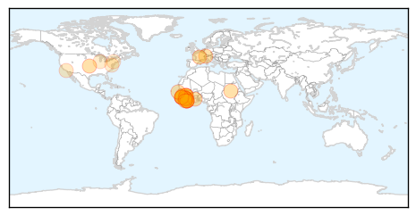
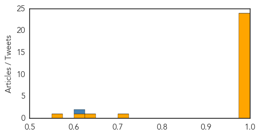

Toggle navigation
Early Warning
Daily Alerts
Ebola
Jun 24, 2014
Compare to:
-
Dengue Fever
Hemmorhagic Fever
Mold/Fungal Infection
Influenza
Meningitis
Pertussis / Whooping Cough
Middle East Respiratory Syndrome
Cholera
Hepatitis
Chikungunya
Yellow Fever
Bubonic Plague
West Nile Virus
Swine Flu
Measles
Unknown
Mumps
30 Day Trends
Web: 15
alerts
, 4
warnings
Twitter: 2
alerts
, 0
warnings
Top Articles:
1.000
Doctors Without Borders: Ebola 'out of control'
1.000
Ebola Outbreak Out of Control
1.000
Here's Why the West African Ebola Outbreak is "Out of Control"
1.000
Disease Continues to Spread Across 3 African Countries
1.000
Alarm bells are ringing over Ebola - medics - Africa
1.000
Doctors Without Borders Has 'Reached The Reached The Limit Of What It Can Do' In West Africa
1.000
Ebola epidemic raging 'out of control' in West Africa
1.000
Superbugs public health epidemics
1.000
Ebola epidemic in West Africa ‘out of control’
0.999
Ebola virus disease, West Africa – update
0.999
West African Ebola epidemic "out of control"
0.999
West African Ebola epidemic ‘out of control,’ aid group says
0.999
Group: African Ebola epidemic ‘out of control’
0.999
Ebola cases rise in Africa; doctors sound alarm
0.999
WHO reports 32 more Ebola cases in West Africa
0.999
Ghana, Business Advice, Jobs, News, Business Directory, Real Estate, Finance, Forms, Auto
0.999
Doctors Without Borders labels Ebola outbreak as out of control 24/06/2014
0.999
New surge of Ebola cases in West Africa: European Union increases its emergency funding
0.999
Ebola virus outbreak is 'out of control' in West Africa
0.999
Ebola virus outbreak is 'out of control' in West Africa
0.998
Ebola epidemic “out of control” in West Africa
0.996
Ebola, snakes and witchcraft: Stopping the deadly disease in its tracks in West Africa
0.993
Ebola virus disease, West Africa update
0.992
Ebola Virus Disease in West Africa 10 New Cases, 15 Deaths
0.709
A History of Our Obsession with the Disease Apocalypse
0.628
CDC says more lab workers may have been exposed to anthrax
0.607
CDC says more lab workers may have been exposed to anthrax
0.552
84 workers may have been exposed to anthrax: CDC
Top Tweets:
0.622
Oy. RT: WHO reports 32 more Ebola cases in West Africa
http://t.co/74mMLY4UiI
Web/News Articles

Tweets

Article Locations

Article Confidences
